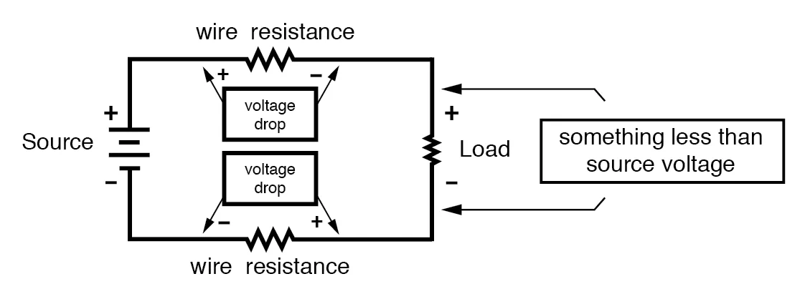

By now you should be well aware of the correlation between electrical conductivity and certain types of materials. Those materials allowing for easy passage of free electrons are called conductors, while those materials impeding the passage of free electrons are called insulators.
Unfortunately, the scientific theories explaining why certain materials conduct and others don’t are quite complex, rooted in quantum mechanical explanations in how electrons are arranged around the nuclei of atoms. Contrary to the well-known “planetary” model of electrons whirling around an atom’s nucleus as well-defined chunks of matter in circular or elliptical orbits, electrons in “orbit” don’t really act like pieces of matter at all. Rather, they exhibit the characteristics of both particle and wave, their behavior constrained by placement within distinct zones around the nucleus referred to as “shells” and “subshells.” Electrons can occupy these zones only in a limited range of energies depending on the particular zone and how occupied that zone is with other electrons. If electrons really did act like tiny planets held in orbit around the nucleus by electrostatic attraction, their actions described by the same laws describing the motions of real planets, there could be no real distinction between conductors and insulators, and chemical bonds between atoms would not exist in the way they do now. It is the discrete, “quantitized” nature of electron energy and placement described by quantum physics that gives these phenomena their regularity.
When an electron is free to assume higher energy states around an atom’s nucleus (due to its placement in a particular “shell”), it may be free to break away from the atom and comprise part of an electric current through the substance.
If the quantum limitations imposed on an electron deny it this freedom, however, the electron is considered to be “bound” and cannot break away (at least not easily) to constitute a current. The former scenario is typical of conducting materials, while the latter is typical of insulating materials.
Some textbooks will tell you that an element’s electrical conductivity is exclusively determined by the number of electrons residing in the atoms’ outer “shell” (called the valence shell), but this is an oversimplification, as any examination of conductivity versus valence electrons in a table of elements will confirm. The true complexity of the situation is further revealed when the conductivity of molecules (collections of atoms bound to one another by electron activity) is considered.
A good example of this is the element carbon, which comprises materials of vastly differing conductivity: graphite and diamond. Graphite is a fair conductor of electricity, while diamond is practically an insulator (stranger yet, it is technically classified as a semiconductor, which in its pure form acts as an insulator, but can conduct under high temperatures and/or the influence of impurities). Both graphite and diamond are composed of the exact same types of atoms: carbon, with 6 protons, 6 neutrons and 6 electrons each. The fundamental difference between graphite and diamond being that graphite molecules are flat groupings of carbon atoms while diamond molecules are tetrahedral (pyramid-shaped) groupings of carbon atoms.
The intentional introduction of impurities into an intrinsic semiconductor for the purpose of altering its electrical, optical, and structural properties is called doping. If atoms of carbon are joined to other types of atoms to form compounds, electrical conductivity becomes altered once again. Silicon carbide, a compound of the elements silicon and carbon, exhibits nonlinear behavior: its electrical resistance decreases with increases in applied voltage! Hydrocarbon compounds (such as the molecules found in oils) tend to be very good insulators. As you can see, a simple count of valence electrons in an atom is a poor indicator of a substance’s electrical conductivity.
All metallic elements are good conductors of electricity, due to the way the atoms bond with each other. The electrons of the atoms comprising a mass of metal are so uninhibited in their allowable energy states that they float freely between the different nuclei in the substance, readily motivated by any electric field. The electrons are so mobile, in fact, that they are sometimes described by scientists as an electron gas, or even an electron sea in which the atomic nuclei rest. This electron mobility accounts for some of the other common properties of metals: good heat conductivity, malleability and ductility (easily formed into different shapes), and a lustrous finish when pure.
Thankfully, the physics behind all this is mostly irrelevant to our purposes here. Suffice it to say that some materials are good conductors, some are poor conductors, and some are in between. For now it is good enough to simply understand that these distinctions are determined by the configuration of the electrons around the constituent atoms of the material.
An important step in getting electricity to do our bidding is to be able to construct paths for current to flow with controlled amounts of resistance. It is also vitally important that we be able to prevent current from flowing where we don’t want it to, by using insulating materials. However, not all conductors are the same, and neither are all insulators. We need to understand some of the characteristics of common conductors and insulators, and be able to apply these characteristics to specific applications.
Almost all conductors possess a certain, measurable resistance (special types of materials called superconductors possess absolutely no electrical resistance, but these are not ordinary materials, and they must be held in special conditions in order to be super conductive). Typically, we assume the resistance of the conductors in a circuit to be zero, and we expect that current passes through them without producing any appreciable voltage drop. In reality, however, there will almost always be a voltage drop along the (normal) conductive pathways of an electric circuit, whether we want a voltage drop to be there or not:

In order to calculate what these voltage drops will be in any particular circuit, we must be able to ascertain the resistance of ordinary wire, knowing the wire size and diameter. Some of the following sections of this chapter will address the details of doing this.
REVIEW: